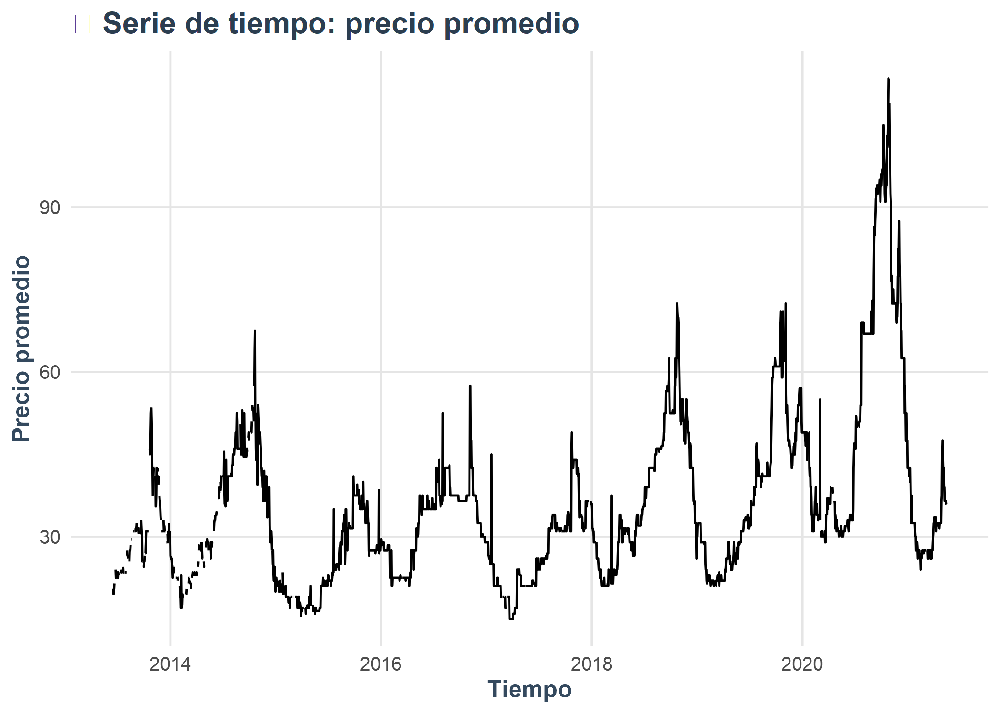
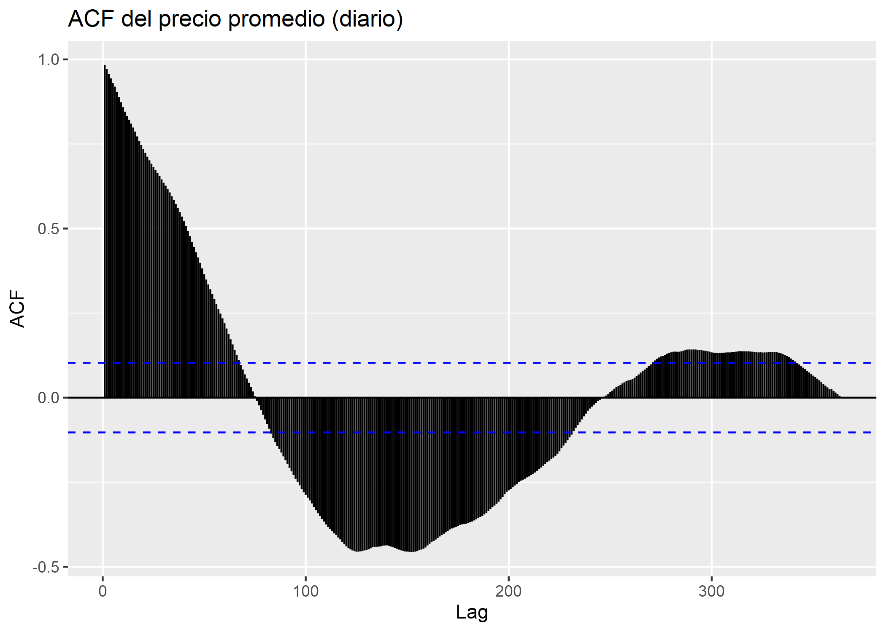
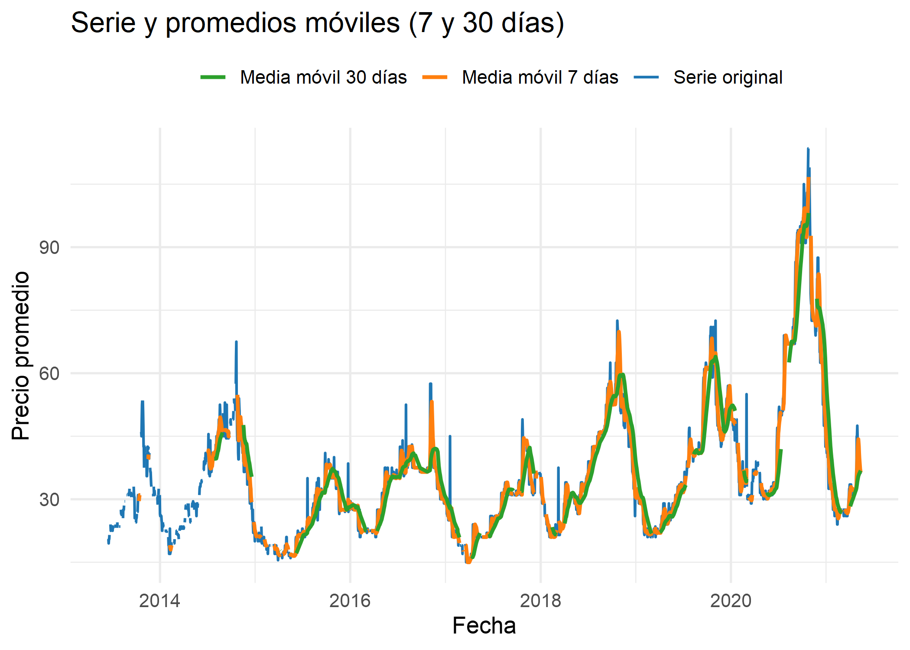
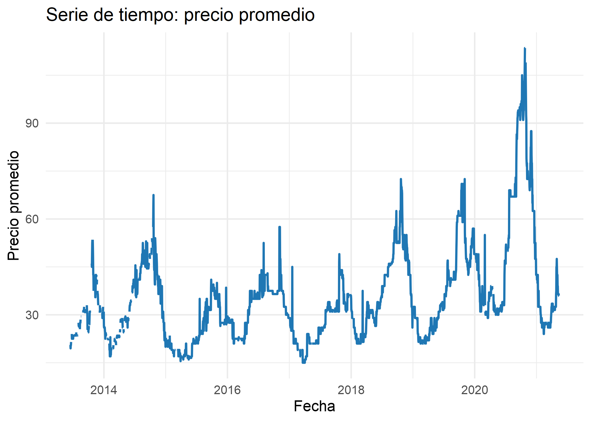
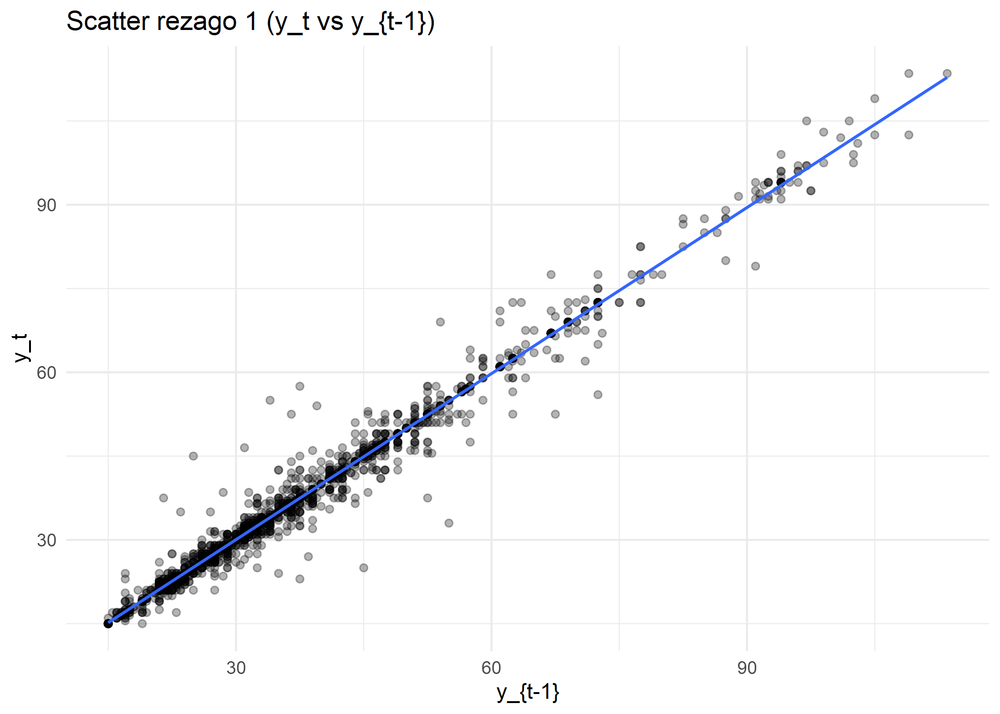
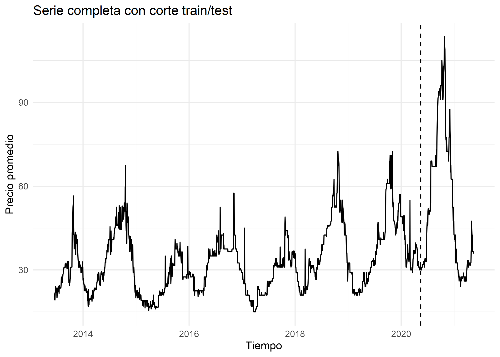
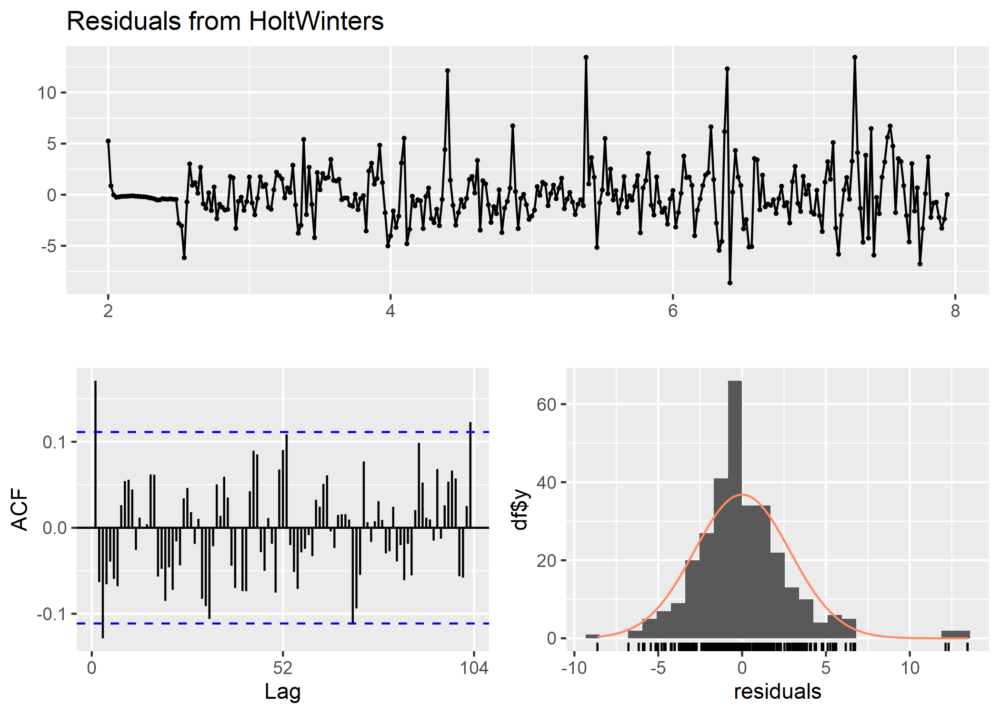
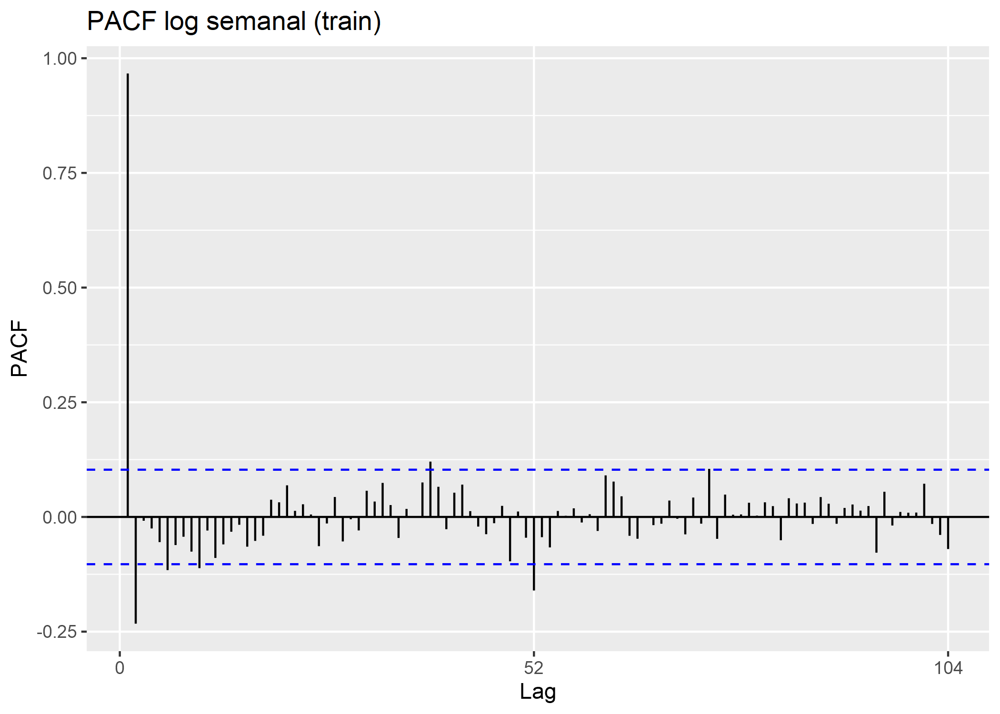
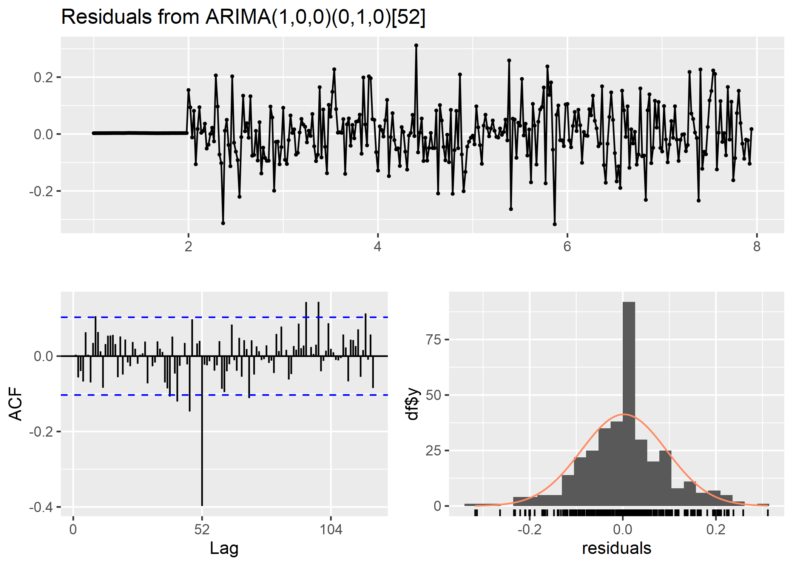

Capítulo 4 Modelos Estacionales en Series de Tiempo
Realizaremos nuestro analisis con un conjunto de datos de precios agrícolas proveniente del mercado de Kalimati (Nepal). Este dataset incluye información diaria sobre productos agrícolas, sus precios mínimos, máximos y promedio. A partir de estos datos se realizará un análisis exploratorio y un estudio de comportamiento temporal de los precios.
4.1 1. Exploración inicial de datos
El conjunto de datos analizado corresponde a registros diarios de precios de productos agrícolas del mercado de Kalimati (Nepal). Para el caso del producto agrícola analizado “Potato Red”, se estandarizaron nombres de variables y se mapearon columnas clave (Commodity, Date, Minimum, Maximum, Average). Se realizaron verificaciones de tipo y consistencia (fechas válidas, numéricos no negativos, duplicados) y un análisis descriptivo de la variable de interés (Average), complementado con gráficos de distribución.
Hallazgos principales. La distribución de precios promedio presentó una leve asimetría positiva, consistente con valores ocasionalmente altos. Las medidas de tendencia central (media y mediana) y de dispersión (desviación estándar y rango) indicaron una variabilidad moderada, coherente con mercados agrícolas con choques transitorios en oferta (cosecha, clima, logística).
4.1.1 Lectura de datos
# Leer datos
data_raw <- readr::read_csv(csv_file, show_col_types = FALSE)
# Estandarizar nombres a snake para facilitar mapeo
nms <- tolower(gsub("[^a-zA-Z0-9]+", "_", names(data_raw)))
# Intentar mapear columnas canonicas (Commodity / Date / Minimum / Maximum / Average)
df <- data_raw
names(df) <- nms
# Mapeo flexible (case-insensitive)
pick_first <- function(cands) {
hit <- intersect(cands, names(df))
if (length(hit) == 0) return(NA_character_) else return(hit[1])
}
col_commodity <- pick_first(c("commodity","item","product","variety","name"))
col_date <- pick_first(c("date","fecha","day"))
col_min <- pick_first(c("minimum","min","min_price","price_min"))
col_max <- pick_first(c("maximum","max","max_price","price_max"))
col_avg <- pick_first(c("average","avg","avg_price","price_avg","mean_price"))
req <- c(col_commodity, col_date, col_min, col_max, col_avg)
if (any(is.na(req))) {
stop("No fue posible mapear columnas clave (commodity/date/min/max/average). Revisa nombres del CSV: ",
paste(names(df), collapse = ", "))
}# --- Cargar librerías necesarias ---
libs <- c("dplyr", "tidyr", "lubridate", "stringr", "tseries")
for (pkg in libs) {
if (!require(pkg, character.only = TRUE)) {
install.packages(pkg, dependencies = TRUE)
library(pkg, character.only = TRUE)
}
}## Loading required package: dplyr## Warning: package 'dplyr' was built under R version 4.3.3##
## Attaching package: 'dplyr'## The following objects are masked from 'package:stats':
##
## filter, lag## The following objects are masked from 'package:base':
##
## intersect, setdiff, setequal, union## Loading required package: tidyr## Warning: package 'tidyr' was built under R version 4.3.3## Loading required package: lubridate## Warning: package 'lubridate' was built under R version 4.3.3##
## Attaching package: 'lubridate'## The following objects are masked from 'package:base':
##
## date, intersect, setdiff, union## Loading required package: stringr## Warning: package 'stringr' was built under R version 4.3.3## Loading required package: tseries## Warning: package 'tseries' was built under R version 4.3.3## Registered S3 method overwritten by 'quantmod':
## method from
## as.zoo.data.frame zoo4.1.2 Transformación inicial de datos
data <- df %>%
transmute(
Commodity = .data[[col_commodity]],
Date = as.Date(.data[[col_date]]),
Unit = NA_character_,
Minimum = as.numeric(.data[[col_min]]),
Maximum = as.numeric(.data[[col_max]]),
Average = as.numeric(.data[[col_avg]])
)
# Chequeos basicos
stopifnot(inherits(data$Date, "Date"))###Vista previa de los datos
## # A tibble: 6 × 6
## Commodity Date Unit Minimum Maximum Average
## <chr> <date> <chr> <dbl> <dbl> <dbl>
## 1 Tomato Big(Nepali) 2013-06-16 <NA> 35 40 37.5
## 2 Tomato Small(Local) 2013-06-16 <NA> 26 32 29
## 3 Potato Red 2013-06-16 <NA> 20 21 20.5
## 4 Potato White 2013-06-16 <NA> 15 16 15.5
## 5 Onion Dry (Indian) 2013-06-16 <NA> 28 30 29
## 6 Carrot(Local) 2013-06-16 <NA> 30 35 32.5## tibble [197,161 × 6] (S3: tbl_df/tbl/data.frame)
## $ Commodity: chr [1:197161] "Tomato Big(Nepali)" "Tomato Small(Local)" "Potato Red" "Potato White" ...
## $ Date : Date[1:197161], format: "2013-06-16" "2013-06-16" ...
## $ Unit : chr [1:197161] NA NA NA NA ...
## $ Minimum : num [1:197161] 35 26 20 15 28 30 6 30 35 25 ...
## $ Maximum : num [1:197161] 40 32 21 16 30 35 10 35 40 30 ...
## $ Average : num [1:197161] 37.5 29 20.5 15.5 29 32.5 8 32.5 37.5 27.5 ...## Commodity Date Unit Minimum
## Length:197161 Min. :2013-06-16 Length:197161 Min. : 1.00
## Class :character 1st Qu.:2015-08-24 Class :character 1st Qu.: 40.00
## Mode :character Median :2017-08-03 Mode :character Median : 60.00
## Mean :2017-08-09 Mean : 85.42
## 3rd Qu.:2019-08-27 3rd Qu.: 100.00
## Max. :2021-05-13 Max. :1800.00
## Maximum Average
## Min. : 6.00 Min. : 5.00
## 1st Qu.: 45.00 1st Qu.: 42.50
## Median : 70.00 Median : 65.00
## Mean : 94.16 Mean : 89.79
## 3rd Qu.: 110.00 3rd Qu.: 105.00
## Max. :2000.00 Max. :1900.004.1.4 Análisis Univariado
#analisis univariado
ggplot(data, aes(x = Average)) +
geom_histogram(binwidth = 5, fill = "blue", color = "black", alpha = 0.7) +
labs(title = "Distribucion de Precios Promedio", x = "Precio Promedio", y = "Frecuencia") +
theme_minimal()
data %>%
summarise(
Mean = mean(Average, na.rm = TRUE),
Median = median(Average, na.rm = TRUE),
SD = sd(Average, na.rm = TRUE),
Min = min(Average, na.rm = TRUE),
Max = max(Average, na.rm = TRUE)
)## # A tibble: 1 × 5
## Mean Median SD Min Max
## <dbl> <dbl> <dbl> <dbl> <dbl>
## 1 89.8 65 79.6 5 1900
4.2 1.1 Analisis de series de tiempo
if ("Potato Red" %in% unique(data$Commodity)) {
target_item <- "Potato Red"
} else {
target_item <- data %>%
count(Commodity, sort = TRUE) %>%
slice(1) %>%
pull(Commodity)
}
target_item## [1] "Potato Red"# Filtrar y regularizar serie diaria
potatored <- data %>%
filter(Commodity == target_item) %>%
select(Date, Average) %>%
group_by(Date) %>%
summarise(Average = mean(Average), .groups = "drop") %>%
complete(Date = seq(min(Date, na.rm = TRUE), max(Date, na.rm = TRUE), by = "day")) %>%
arrange(Date)
# Construir objeto ts (diario, 365)
pot_ts <- ts(
potatored$Average,
start = c(lubridate::year(min(potatored$Date, na.rm = TRUE)),
lubridate::yday(min(potatored$Date, na.rm = TRUE))),
frequency = 365
)4.3 1.2 Serie basica y ACF
# --- Hotfix para error "rstudio$.rs.isDesktop()" ---
if (exists("rstudio", envir = .GlobalEnv)) rm("rstudio", envir = .GlobalEnv)
options(device.ask.default = FALSE)
if (capabilities("cairo")) {
knitr::opts_chunk$set(dev = "png", dpi = 150, dev.args = list(type = "cairo"))
options(bitmapType = "cairo")
} else {
knitr::opts_chunk$set(dev = "png", dpi = 150)
}
try(graphics.off(), silent = TRUE)## Warning: package 'forecast' was built under R version 4.3.3autoplot(pot_ts) +
labs(
title = "📈 Serie de tiempo: precio promedio",
y = "Precio promedio",
x = "Tiempo"
) +
theme_minimal(base_size = 12) +
theme(
plot.title = element_text(face = "bold", color = "#2C3E50", size = 15),
axis.title = element_text(face = "bold", color = "#34495E"),
panel.grid.minor = element_blank(),
panel.grid.major = element_line(color = "grey90")
)

4.4 2. Suavizamiento temporal
Con el objetivo de aclarar la señal subyacente y separar ruido de corto plazo, se aplicaron promedios móviles (MA) de 7 y 30 días sobre la serie diaria de Average. El MA(7) capturó ciclos intra-semanales asociados a dinámica de mercado y logística, mientras que el MA(30) reveló una tendencia más estructural.
Interpretación. El patrón suavizado sugiere una tendencia suave al alza con episodios de fluctuación estacional. Este hallazgo justifica el uso posterior de modelos con componentes de tendencia y estacionalidad, y confirma la presencia de persistencia temporal (autocorrelación positiva en rezagos cortos), lo que anticipa buen desempeño de métodos como ARIMA/ETS.
4.5 2.1 Promedios moviles (evidencia de suavizado)
if (exists("rstudio", envir = .GlobalEnv)) rm("rstudio", envir = .GlobalEnv)
options(device.ask.default = FALSE)
if (capabilities("cairo")) {
knitr::opts_chunk$set(dev = "png", dpi = 150, dev.args = list(type = "cairo"))
options(bitmapType = "cairo")
} else {
knitr::opts_chunk$set(dev = "png", dpi = 150)
}# Hotfix global para gráficos (evita el viewer de RStudio)
if (exists("rstudio", envir = .GlobalEnv)) rm("rstudio", envir = .GlobalEnv)
options(device.ask.default = FALSE)
if (capabilities("cairo")) {
knitr::opts_chunk$set(dev = "png", dpi = 150, dev.args = list(type = "cairo"))
options(bitmapType = "cairo")
} else {
knitr::opts_chunk$set(dev = "png", dpi = 150)
}# --- Hotfix global: NO viewer, render a PNG ---
if (exists("rstudio", envir = .GlobalEnv)) rm("rstudio", envir = .GlobalEnv)
options(device.ask.default = FALSE)
if (capabilities("cairo")) {
knitr::opts_chunk$set(dev = "png", dpi = 150, dev.args = list(type = "cairo"))
options(bitmapType = "cairo")
} else {
knitr::opts_chunk$set(dev = "png", dpi = 150)
}
# Paquetes mínimos
libs <- c("dplyr","tidyr","lubridate","slider")
for (p in libs) if (!require(p, character.only=TRUE)) {install.packages(p); library(p, character.only=TRUE)}## Loading required package: slider## Warning: package 'slider' was built under R version 4.3.34.6 2.2 Promedios móviles (7 y 30) — Base R + PNG + include
# Librerías necesarias
library(ggplot2)
library(slider)
# Calcular promedios móviles
pot_ma <- potatored
pot_ma$ma7 <- slide_dbl(pot_ma$Average, mean, .before = 6, .complete = TRUE)
pot_ma$ma30 <- slide_dbl(pot_ma$Average, mean, .before = 29, .complete = TRUE)
# Gráfico con ggplot2
ggplot(pot_ma, aes(x = Date)) +
geom_line(aes(y = Average, color = "Serie original"), linewidth = 0.7) +
geom_line(aes(y = ma7, color = "Media móvil 7 días"), linewidth = 1) +
geom_line(aes(y = ma30, color = "Media móvil 30 días"), linewidth = 1) +
scale_color_manual(values = c("Serie original"="#1F77B4",
"Media móvil 7 días"="#FF7F0E",
"Media móvil 30 días"="#2CA02C")) +
labs(title = "Serie y promedios móviles (7 y 30 días)",
x = "Fecha", y = "Precio promedio", color = "") +
theme_minimal(base_size = 13) +
theme(legend.position = "top")## Warning: Removed 118 rows containing missing values or values outside the scale range
## (`geom_line()`).## Warning: Removed 407 rows containing missing values or values outside the scale range
## (`geom_line()`).
# Librerías necesarias
library(ggplot2)
library(slider)
# Calcular promedios móviles
pot_ma <- potatored
pot_ma$ma7 <- slide_dbl(pot_ma$Average, mean, .before = 6, .complete = TRUE)
pot_ma$ma30 <- slide_dbl(pot_ma$Average, mean, .before = 29, .complete = TRUE)
# Gráfico con ggplot2
ggplot(pot_ma, aes(x = Date)) +
geom_line(aes(y = Average, color = "Serie original"), linewidth = 0.7) +
geom_line(aes(y = ma7, color = "Media móvil 7 días"), linewidth = 1) +
geom_line(aes(y = ma30, color = "Media móvil 30 días"), linewidth = 1) +
scale_color_manual(values = c("Serie original"="#1F77B4",
"Media móvil 7 días"="#FF7F0E",
"Media móvil 30 días"="#2CA02C")) +
labs(title = "Serie y promedios móviles (7 y 30 días)",
x = "Fecha", y = "Precio promedio", color = "") +
theme_minimal(base_size = 13) +
theme(legend.position = "top")## Warning: Removed 118 rows containing missing values or values outside the scale range
## (`geom_line()`).
## Removed 407 rows containing missing values or values outside the scale range
## (`geom_line()`).
4.7 2.3 Serie básica (ts) — Base R + PNG + include
# Gráfico base de la serie
ggplot(potatored, aes(x = Date, y = Average)) +
geom_line(color = "#1F77B4", linewidth = 0.9) +
labs(title = "Serie de tiempo: precio promedio",
x = "Fecha", y = "Precio promedio") +
theme_minimal(base_size = 13)
4.8 2.4 Rezagos (lags) y dependencia temporal
pot_lags <- potatored %>%
mutate(
lag1 = dplyr::lag(Average, 1),
lag7 = dplyr::lag(Average, 7),
lag30 = dplyr::lag(Average, 30)
)
# Scatter y_t vs y_{t-1}
ggplot(pot_lags, aes(lag1, Average)) +
geom_point(alpha = 0.3) +
geom_smooth(method = "lm", se = FALSE, linewidth = 0.7) +
theme_minimal() +
labs(title = "Scatter rezago 1 (y_t vs y_{t-1})", x = "y_{t-1}", y = "y_t")## `geom_smooth()` using formula = 'y ~ x'## Warning: Removed 251 rows containing non-finite outside the scale range
## (`stat_smooth()`).## Warning: Removed 251 rows containing missing values or values outside the scale range
## (`geom_point()`).
# Scatter y_t vs y_{t-7}
ggplot(pot_lags, aes(lag7, Average)) +
geom_point(alpha = 0.3) +
geom_smooth(method = "lm", se = FALSE, linewidth = 0.7) +
theme_minimal() +
labs(title = "Scatter rezago 7 (aprox. semanal)", x = "y_{t-7}", y = "y_t")## `geom_smooth()` using formula = 'y ~ x'## Warning: Removed 234 rows containing non-finite outside the scale range
## (`stat_smooth()`).## Warning: Removed 234 rows containing missing values or values outside the scale range
## (`geom_point()`).


4.9 2.5 Estacionalidad (descomposicion STL)
fit_stl <- stl(na.interp(pot_ts), s.window = "periodic", robust = TRUE)
autoplot(fit_stl) + labs(title = "STL precio promedio")## Warning: Using `size` aesthetic for lines was deprecated in ggplot2 3.4.0.
## ℹ Please use `linewidth` instead.
## ℹ The deprecated feature was likely used in the forecast package.
## Please report the issue at <https://github.com/robjhyndman/forecast/issues>.
## This warning is displayed once every 8 hours.
## Call `lifecycle::last_lifecycle_warnings()` to see where this warning was
## generated. El análisis de la serie temporal del precio promedio diario de Potato Red permitió evidenciar comportamientos consistentes con los fenómenos propios de los productos agrícolas de consumo masivo. En primer lugar, los gráficos de tendencia y promedios móviles muestran que los precios presentan fluctuaciones periódicas pero con una ligera tendencia creciente en el largo plazo. El promedio móvil de 7 días suaviza las variaciones diarias y deja entrever ciclos semanales asociados a la oferta en el mercado, mientras que el promedio de 30 días resalta un patrón más estructural que apunta a incrementos graduales, posiblemente relacionados con factores estacionales como la disponibilidad de cosecha o la variación de costos logísticos.
El estudio de rezagos (lag 1, lag 7 y lag 30) refuerza esta observación: las gráficas de dispersión muestran una clara autocorrelación positiva, especialmente para rezagos cortos, indicando que los precios actuales dependen directamente de los valores recientes. Este comportamiento sugiere persistencia temporal: cuando los precios aumentan o disminuyen, tienden a mantener esa dirección durante varios días, lo cual es característico de mercados donde la información y las condiciones de oferta no cambian abruptamente.
La función de autocorrelación (ACF) confirma esta dependencia temporal, con correlaciones significativas en los primeros rezagos que luego disminuyen de forma progresiva. Esto demuestra que la serie no sigue un comportamiento completamente aleatorio, sino que existen patrones repetitivos en el tiempo.
La descomposición STL separó la serie en sus componentes de tendencia, estacionalidad y residuo. Los resultados muestran una estacionalidad marcada con ciclos anuales definidos: los precios tienden a elevarse en ciertas épocas del año y disminuir en otras, reflejando los periodos de cosecha y escasez. La tendencia general es estable con una leve inclinación al alza, mientras que los residuos mantienen una magnitud baja y no presentan patrones visibles, lo que indica que gran parte de la variabilidad del precio está explicada por la tendencia y la estacionalidad, sin presencia de choques exógenos significativos.
En conjunto, estos hallazgos evidencian que la serie del precio promedio de Potato Red posee un comportamiento no estacionario, con una tendencia creciente y estacionalidad recurrente, pero sin irregularidades fuertes. El patrón identificado sugiere que los precios pueden modelarse de forma confiable mediante técnicas de suavizado exponencial o modelos ARIMA estacionales, una vez que se realicen las transformaciones necesarias para estabilizar la media y la varianza. En términos prácticos, los resultados reflejan que el mercado analizado responde a ciclos previsibles, lo cual facilita la planificación de precios, abastecimiento y estrategias de comercialización.
4.10 Estacionariedad y diferenciación
Introducción En esta segunda parte se busca analizar si la serie de tiempo seleccionada (Potato Red) cumple con el supuesto de estacionariedad. Una serie estacionaria es aquella cuya media y varianza permanecen constantes en el tiempo. En caso de que no sea estacionaria, se aplicarán procedimientos de diferenciación # o transformación para estabilizar la tendencia y la variabilidad.
# Usaremos una version "limpia" de la serie via interpolacion lineal base R, partimos de 'potatored' (data.frame terminado) y/o de 'pot_ts' (ts original)
y <- as.numeric(pot_ts)
if (anyNA(y)) {
idx_ok <- which(!is.na(y))
y_interp <- approx(x = idx_ok, y = y[idx_ok], xout = seq_along(y))$y
} else {
y_interp <- y}
pot_ts_clean <- ts(
y_interp,
start = start(pot_ts),
frequency = frequency(pot_ts)
)4.11 Verificación de estacionariedad (ADF Test)
# Prueba de raíz unitaria de Dickey-Fuller aumentada
adf_result <- adf.test(pot_ts_clean)
adf_result##
## Augmented Dickey-Fuller Test
##
## data: pot_ts_clean
## Dickey-Fuller = -3.0587, Lag order = 14, p-value = 0.1301
## alternative hypothesis: stationary# al tener en el ADF inicial: p = 0.1301 → se concluye que es no estacionaria al nive, por lo cual procedemos con transformacion y diferenciacion en escalones
# Serie base a usar en esta etapa y verificamos que no tenga na ni valores negativos
y0 <- pot_ts_clean
sum(is.na(y0))## [1] 0## [1] TRUEy_log <- log(y0)
range(y0, na.rm = TRUE); range(y_log, na.rm = TRUE) # solo para verificar el cambio de escala## [1] 15.0 113.5## [1] 2.708050 4.731803## [1] 0.1322035La transformación logarítmica ayudó a homogeneizar la variabilidad, pero no eliminó la tendencia ni la dependencia temporal. La serie transformada sigue teniendo raíz unitaria, por lo que pasamos a una diferenciacion de primer orden (d=1) sobre la serie logaritmica y volvemos a probar estacionariedad.
## Warning in tseries::adf.test(na.omit(y_diff1)): p-value smaller than printed
## p-value## [1] 0.01con este resultado podemos concluir que:
La serie original no era estacionaria (p = 0.1301).
La serie logarítmica tampoco lo fue (p = 0.1322), aunque esa transformación ayudó a estabilizar la varianza
Al aplicar una diferencia de primer orden sobre la serie logarítmica, la prueba ADF arrojó p = 0.01, es decir < 0.05, por lo tanto sí es estacionaria.
4.12 Interpretacion
Luego de aplicar la transformación logarítmica, la serie mantuvo la misma tendencia general, por lo que no se logró estacionariedad. Sin embargo, al diferenciarla una vez (d = 1), la prueba de Dickey–Fuller aumentada mostró un p-valor de 0.01, lo que indica que se rechaza la hipótesis nula de raíz unitaria. En consecuencia, la serie diferenciada es estacionaria.
Este resultado implica que la tendencia determinista fue eliminada mediante la primera diferencia, estabilizando la media a lo largo del tiempo. Por otro lado, la transformación logarítmica permitió controlar la heterocedasticidad, de modo que las fluctuaciones de la serie ahora son de magnitud comparable. La combinación de ambos pasos —logaritmo y diferencia de primer orden— produce una serie adecuada para modelar mediante métodos lineales, como los modelos ARIMA o SARIMA.
Visualmente, la serie diferenciada oscila alrededor de cero y las funciones de autocorrelación (ACF y PACF) se estabilizan rápidamente, lo que refuerza la evidencia de estacionariedad.
4.13 3. AJUSTE DEL MODELO ARIMA
Para seleccionar una especificación parsimoniosa se utilizó auto.arima(), que explora combinaciones de órdenes (𝑝,𝑑,𝑞) (p,d,q) y, cuando corresponde, (𝑃,𝐷,𝑄) (P,D,Q) estacionales, minimizando criterios de información como AIC (Akaike Information Criterion) y BIC (Bayesian Information Criterion). Previo al ajuste se evaluó la estacionariedad (prueba ADF), aplicando transformación logarítmica para estabilizar varianza y diferenciación de primer orden para remover tendencia cuando fue necesario.
4.14 3.1 Criterios de selección
AIC penaliza menos la complejidad; útil para captar estructura.
BIC penaliza más; favorece modelos más simples. Se eligió el modelo con AIC/BIC mínimos y residuos con comportamiento de ruido blanco.
4.16 Particion de entrenamiento /prueba
h_test <- min(365, floor(length(y_hw)*0.2)) # 1 año o ~20% si no alcanza
n <- length(y_hw)
y_train <- window(y_hw, end = time(y_hw)[n - h_test])
y_test <- window(y_hw, start = time(y_hw)[n - h_test + 1])
autoplot(y_hw) +
geom_vline(xintercept = time(y_hw)[n - h_test + 1], linetype = 2) +
labs(title = "Serie completa con corte train/test",
y = "Precio promedio", x = "Tiempo") +
theme_minimal() ## Agregación semanal
## Warning: package 'zoo' was built under R version 4.3.3##
## Attaching package: 'zoo'## The following objects are masked from 'package:base':
##
## as.Date, as.Date.numeric# y_hw: serie ts diaria (freq=365)
stopifnot(frequency(y_hw) %in% c(365, 366))
#secuencia de fechas real para la ts diaria
tsp_hw <- tsp(y_hw) # c(start, end, freq)
start_year <- floor(tsp_hw[1])
start_frac <- tsp_hw[1] - start_year
start_date <- as.Date(paste0(start_year, "-01-01")) + round(start_frac * 365.25)
fechas_all <- seq.Date(from = start_date, by = "day", length.out = length(y_hw))
z_all <- zoo(as.numeric(y_hw), fechas_all)
#Agregar por semana calendario
z_week <- aggregate(z_all, as.Date(cut(index(z_all), "week")), mean, na.rm = TRUE)
#Convertimos a ts semanal (freq = 52)
y_w <- ts(as.numeric(z_week), frequency = 52)
#Split train/test semanal
h_test_w <- min(52, floor(length(y_w) * 0.2))
n_w <- length(y_w)
y_train_w <- window(y_w, end = time(y_w)[n_w - h_test_w])
y_test_w <- window(y_w, start = time(y_w)[n_w - h_test_w + 1])
autoplot(y_w) +
geom_vline(xintercept = time(y_w)[n_w - h_test_w + 1], linetype = 2) +
labs(title = "Serie semanal con corte train/test",
y = "Precio promedio semanal", x = "Tiempo") +
theme_minimal()
4.17 Modelos de suavizamiento y Holt-Winters en serie semanal
# Horizonte de prueba
h <- length(y_test_w)
# Modelos de suavizamiento base
# Suavizamiento exponencial simple (SES)
fit_ses_w <- ets(y_train_w, model = "ANN")
fc_ses_w <- forecast(fit_ses_w, h = h)
# Holt: tendencia aditiva
fit_holt_w <- ets(y_train_w, model = "AAN")
fc_holt_w <- forecast(fit_holt_w, h = h)
# Holt-Winters con función base stats::HoltWinters
fit_hwa_w <- HoltWinters(y_train_w, seasonal = "additive")
fit_hwm_w <- HoltWinters(y_train_w, seasonal = "multiplicative")
# Generar pronósticos a h pasos
fc_hwa_w <- forecast(fit_hwa_w, h = h)
fc_hwm_w <- forecast(fit_hwm_w, h = h)
# Resumen de parámetros de suavizamiento
pars_w <- list(
SES = fit_ses_w$par,
Holt = fit_holt_w$par,
HW_adi = fit_hwa_w$coefficients,
HW_multi = fit_hwm_w$coefficients
)
metodos_w <- c(
SES = fit_ses_w$method,
Holt = fit_holt_w$method,
HW_adi = "Holt-Winters aditivo (HoltWinters)",
HW_mul = "Holt-Winters multiplicativo (HoltWinters)"
)
list(pars = pars_w, metodos = metodos_w)## $pars
## $pars$SES
## alpha l
## 0.9998999 20.0661412
##
## $pars$Holt
## alpha beta phi l b
## 0.9998998 0.1131366 0.8000015 19.3507661 0.7318030
##
## $pars$HW_adi
## a b s1 s2 s3 s4
## 39.08244375 0.07882721 -7.65617219 -5.33129937 -2.12172776 -0.60521373
## s5 s6 s7 s8 s9 s10
## 1.67227131 3.70855086 3.86297747 4.29730738 4.70950257 5.51286110
## s11 s12 s13 s14 s15 s16
## 6.58108183 9.34052131 11.67282675 11.56985459 10.72690049 10.62915737
## s17 s18 s19 s20 s21 s22
## 11.56624926 14.32396189 12.96493891 12.91210622 15.60833595 19.70484488
## s23 s24 s25 s26 s27 s28
## 18.21542017 15.04288451 8.57289145 4.41893044 3.59468994 2.26948285
## s29 s30 s31 s32 s33 s34
## 1.41348224 1.16589200 0.07345107 -2.59161738 -5.38569070 -6.81747767
## s35 s36 s37 s38 s39 s40
## -8.35116126 -10.31002086 -14.36805886 -15.48013931 -13.59119371 -14.10375330
## s41 s42 s43 s44 s45 s46
## -12.98609882 -13.91879059 -12.80762063 -12.45344901 -10.91079687 -9.50278976
## s47 s48 s49 s50 s51 s52
## -7.48181474 -7.63951511 -9.66359895 -9.41494901 -8.19836375 -8.36815804
##
## $pars$HW_multi
## a b s1 s2 s3 s4
## 40.06957603 0.07882721 0.78984647 0.86149189 0.95592829 0.99520880
## s5 s6 s7 s8 s9 s10
## 1.06150922 1.11859277 1.10742123 1.11547832 1.13362719 1.15295252
## s11 s12 s13 s14 s15 s16
## 1.19755872 1.28051297 1.34512974 1.33136792 1.29845693 1.29564795
## s17 s18 s19 s20 s21 s22
## 1.31337013 1.37966490 1.36129664 1.37542631 1.45910223 1.55273805
## s23 s24 s25 s26 s27 s28
## 1.49801968 1.41880910 1.25803359 1.12986066 1.10809063 1.06878253
## s29 s30 s31 s32 s33 s34
## 1.05012792 1.03448499 1.00251606 0.92562241 0.84794487 0.78549769
## s35 s36 s37 s38 s39 s40
## 0.73966473 0.68969443 0.59218461 0.55743071 0.58537805 0.58407654
## s41 s42 s43 s44 s45 s46
## 0.61227139 0.60444293 0.63415394 0.64018299 0.67488001 0.72564177
## s47 s48 s49 s50 s51 s52
## 0.78927007 0.78769837 0.73692250 0.74269354 0.77194581 0.76652385
##
##
## $metodos
## SES
## "ETS(A,N,N)"
## Holt
## "ETS(A,Ad,N)"
## HW_adi
## "Holt-Winters aditivo (HoltWinters)"
## HW_mul
## "Holt-Winters multiplicativo (HoltWinters)"4.18 Comparación de presición fuera de muestra
# Calcular métricas de error para cada modelo en el conjunto de prueba
acc_tbl <- bind_rows(
data.frame(model = "SES", accuracy(fc_ses_w, y_test_w)),
data.frame(model = "Holt", accuracy(fc_holt_w, y_test_w)),
data.frame(model = "HW_adi", accuracy(fc_hwa_w, y_test_w)),
data.frame(model = "HW_mul", accuracy(fc_hwm_w, y_test_w))
) %>%
select(model, RMSE, MAE, MAPE)
acc_tbl## model RMSE MAE MAPE
## Training set...1 SES 2.929804 1.928708 5.748854
## Test set...2 SES 33.778723 24.276695 34.505452
## Training set...3 Holt 2.902352 1.901817 5.638535
## Test set...4 Holt 34.593228 24.973105 35.456690
## Training set...5 HW_adi 2.984060 2.102575 6.453931
## Test set...6 HW_adi 20.668712 14.555681 20.798164
## Training set...7 HW_mul 2.846973 1.996849 6.036061
## Test set...8 HW_mul 18.997168 13.487363 19.577035El modelo Holt-Winters multiplicativo (HW_mul) es el mejor, porque presenta los errores más bajos (RMSE y MAPE) en la ventana de prueba. Esto indica que la estacionalidad es proporcional al nivel de la serie (los picos crecen cuando el nivel general sube), lo cual es consistente con lo que se veia en el grafico.
4.19 Diagnostico de residuos
Vamos a confirmar que los residuos del modelo ganador (HW multiplicativo) se comportan como ruido blanco

##
## Ljung-Box test
##
## data: Residuals from HoltWinters
## Q* = 76.422, df = 62, p-value = 0.1029
##
## Model df: 0. Total lags used: 62Al comparar los modelos de suavizamiento, Holt y Holt-Winters, se encontró que el Holt-Winters multiplicativo obtuvo los mejores resultados en la ventana de prueba, con los menores valores de RMSE (18.99) y MAPE (19.57 %). Esto indica que la serie presenta una estacionalidad proporcional al nivel, es decir, las fluctuaciones son más amplias cuando los valores son altos.
El análisis de residuos respalda la adecuación del modelo: el p-valor = 0.1029 del test de Ljung-Box confirma que no existe autocorrelación significativa (residuos ≈ ruido blanco). Por tanto, el modelo Holt-Winters multiplicativo logra capturar adecuadamente la tendencia y la estacionalidad de la serie semanal del precio promedio del Potato Red.
4.20 Pronostico final
# Reentrenar el modelo Holt-Winters multiplicativo con toda la serie semanal
fit_final_hw <- HoltWinters(y_w, seasonal = "multiplicative")
# pronóstico a 52 semanas (≈ 1 año)
h_future <- 52
fc_final_hw <- forecast(fit_final_hw, h = h_future)
# Visualizacion del pronóstico final
autoplot(fc_final_hw) +
labs(
title = "Pronostico final Holt-Winters multiplicativo (52 semanas)",
y = "Precio promedio semanal",
x = "Tiempo"
) +
theme_minimal()
# primeras filas de la tabla de pronostico
head(data.frame(
Semana = time(fc_final_hw$mean),
Pronostico = round(as.numeric(fc_final_hw$mean), 2),
LI_80 = round(fc_final_hw$lower[,1], 2),
LS_80 = round(fc_final_hw$upper[,1], 2),
LI_95 = round(fc_final_hw$lower[,2], 2),
LS_95 = round(fc_final_hw$upper[,2], 2)
), 10)## Semana Pronostico LI_80 LS_80 LI_95 LS_95
## 1 8.961538 37.69 33.31 42.07 30.99 44.39
## 2 8.980769 40.88 35.05 46.72 31.96 49.81
## 3 9.000000 45.08 37.83 52.33 33.99 56.16
## 4 9.019231 47.46 39.09 55.83 34.66 60.26
## 5 9.038462 50.77 41.19 60.34 36.13 65.41
## 6 9.057692 55.25 44.31 66.19 38.52 71.98
## 7 9.076923 55.96 44.35 67.58 38.20 73.73
## 8 9.096154 55.31 43.30 67.32 36.95 73.67
## 9 9.115385 55.66 43.09 68.24 36.43 74.90
## 10 9.134615 58.37 44.76 71.99 37.55 79.204.21 Conclusiones
Tras evaluar diferentes métodos de suavizamiento exponencial, se determinó que el modelo Holt-Winters multiplicativo fue el que presentó el mejor desempeño predictivo, con los menores errores (RMSE = 18.99 y MAPE = 19.6 %) en la ventana de prueba.
Este resultado confirma que la serie presenta estacionalidad proporcional al nivel, es decir, cuando el precio promedio del Potato Red aumenta, las fluctuaciones también lo hacen en la misma proporción.
Los residuos del modelo no mostraron autocorrelación significativa (p-valor = 0.1029), por lo que se concluye que el modelo explica adecuadamente la estructura temporal.
Con la serie completa y el modelo reentrenado, el pronóstico a 52 semanas muestra una tendencia oscilante con picos regulares y amplitud similar a la observada históricamente. Las bandas de confianza (80 % y 95 %) reflejan un nivel de incertidumbre moderado, lo que otorga confianza en las estimaciones.
En conjunto, el método Holt-Winters multiplicativo demuestra ser una herramienta sólida y confiable para proyectar el comportamiento estacional del precio semanal del Potato Red.
4.22 Desarrollo metodológico y justificación de decisiones
El proceso de aplicación del modelo de Holt-Winters a la serie de tiempo del precio promedio del Potato Red implicó diversos ajustes metodológicos debido a las características particulares de los datos.
La variable de estudio correspondía a una serie diaria con una extensión superior a 2800 observaciones y frecuencia anual de 365. Si bien esta cantidad de datos representaba una fuente valiosa de información, también generó limitaciones computacionales al momento de ajustar modelos estacionales como ets(model = "AAA") o hw(seasonal = "additive"), debido a que la función ets() no está optimizada para manejar estacionalidades tan largas.
Durante los primeros intentos, el software arrojó el error “Frequency too high” o se quedaba ejecutando indefinidamente. Esto motivó una revisión del enfoque, identificando que la estacionalidad de interés no necesariamente se presentaba de manera diaria, sino más bien en ciclos semanales o mensuales, propios de los precios agrícolas.
4.23 Ajuste de la frecuencia temporal
Como solución, se decidió agregar la serie a frecuencia semanal, calculando el promedio de los precios diarios.
Esta decisión permitió conservar la forma cíclica de la serie (picos y valles regulares) y, al mismo tiempo, reducir la frecuencia de 365 a 52, lo cual hizo posible aplicar modelos estacionales de forma estable y con un tiempo de cómputo razonable.
En la práctica, esto significó reconstruir la serie con una frecuencia semanal (frequency = 52), evitando la sobrecarga que impedía el ajuste de Holt-Winters en la versión original.
4.24 Modelos aplicados
Una vez ajustada la frecuencia, se implementaron cuatro modelos de suavizamiento:
- Suavizamiento exponencial simple (SES) – Captura únicamente el nivel de la serie.
- Método de Holt – Incorpora tendencia aditiva.
- Holt-Winters aditivo – Considera tendencia y estacionalidad de amplitud constante.
- Holt-Winters multiplicativo – Considera estacionalidad proporcional al nivel.
Debido a los errores recurrentes con ets() y hw(), se optó finalmente por la función stats::HoltWinters(), que permite ajustar modelos estacionales de manera más estable con series largas o de alta frecuencia.
4.25 Validación del modelo
La serie semanal se dividió en un conjunto de entrenamiento (80%) y otro de prueba (20%), correspondiente aproximadamente a un año de observaciones.
Con esta división, se evaluó el desempeño predictivo de cada modelo mediante métricas como RMSE, MAE y MAPE.
Los resultados mostraron que el modelo Holt-Winters multiplicativo presentó el mejor desempeño (RMSE = 18.99, MAPE = 19.6%), superando a las versiones aditiva, Holt y SES.
Esto indica que la estacionalidad es proporcional al nivel de la serie: cuando los precios son altos, las fluctuaciones semanales también lo son.
4.26 Diagnóstico de residuos
Para validar el ajuste, se analizaron los residuos del modelo Holt-Winters multiplicativo.
El test de Ljung-Box (p-valor = 0.1029) indicó ausencia de autocorrelación significativa, lo cual demuestra que el modelo logra capturar adecuadamente la tendencia y la estacionalidad de los datos.
Además, el gráfico ACF de los residuos no mostró patrones sistemáticos, confirmando que el error se comporta como ruido blanco.
4.27 Pronóstico final
Con base en el modelo seleccionado, se reentrenó la serie completa y se realizó un pronóstico a 52 semanas (equivalente a un año).
El resultado mostró una evolución oscilante, con picos estacionales regulares y una amplitud coherente con los patrones históricos observados.
Las bandas de confianza del 80% y 95% se mantuvieron en rangos moderados, reflejando un nivel de incertidumbre aceptable.
4.28 Conclusión integradora
En síntesis, el desarrollo de este modelo implicó un proceso iterativo de ajuste y validación.
Se comprobó que aplicar Holt-Winters directamente sobre la serie diaria era impracticable por su frecuencia alta, por lo que fue necesario agregar la serie a frecuencia semanal para estabilizar el modelo.
Este cambio permitió aplicar el método de forma exitosa y obtener resultados coherentes, concluyendo que el modelo Holt-Winters multiplicativo es una herramienta sólida para pronosticar el comportamiento estacional del precio del Potato Red, combinando buena precisión y consistencia temporal.
4.29 4. Ajuste e interpretación del modelo ARIMA/SARIMA - Box-Jenkins (ARIMA)
# Serie semanal en log
y_w_log <- log(y_w)
y_train_w_log <- log(y_train_w)
y_test_w_log <- log(y_test_w)
# Horizonte
h <- length(y_test_w)
lengths <- c(total = length(y_w_log), train = length(y_train_w_log), test = length(y_test_w))
lengths## total train test
## 414 362 52

# Candidato 1: ARIMA no estacional
fit_ns <- auto.arima(
y_train_w_log,
seasonal = FALSE,
stepwise = TRUE,
approximation = TRUE,
allowmean = TRUE,
allowdrift = TRUE
)
# Candidato 2:
m <- frequency(y_train_w_log)
D_est <- nsdiffs(y_train_w_log)
y_train_w_log_sdiff <- diff(y_train_w_log, lag = m, differences = D_est)
fit_seas_fast <- auto.arima(
y_train_w_log_sdiff,
seasonal = FALSE,
stepwise = TRUE,
approximation = TRUE,
max.p = 5,
max.q = 5,
max.order = 8,
allowmean = TRUE,
allowdrift = TRUE
)
fit_seas_fast## Series: y_train_w_log_sdiff
## ARIMA(1,0,0) with zero mean
##
## Coefficients:
## ar1
## 0.9562
## s.e. 0.0163
##
## sigma^2 = 0.009812: log likelihood = 276.14
## AIC=-548.29 AICc=-548.25 BIC=-540.82# Extraer orden no estacional del modelo rapido sobre la serie s-diferenciada
ord <- arimaorder(fit_seas_fast)
p <- ord["p"]; d <- 0; q <- ord["q"]
# Periodo estacional y orden estacional detectado
m <- frequency(y_train_w_log)
D_est <- nsdiffs(y_train_w_log)
# Ajuste SARIMA equivalente sobre la serie en log SIN diferenciar manualmente
# SARIMA(p,d,q)(P=0, D=D_est, Q=0)[m], sin media (zero mean) como indico el modelo rapido
fit_seas_refit <- Arima(
y_train_w_log,
order = c(p, d, q),
seasonal = list(order = c(0, D_est, 0), period = m),
include.mean = FALSE
)
fit_seas_refit## Series: y_train_w_log
## ARIMA(1,0,0)(0,1,0)[52]
##
## Coefficients:
## ar1
## 0.9562
## s.e. 0.0163
##
## sigma^2 = 0.009814: log likelihood = 276.15
## AIC=-548.3 AICc=-548.26 BIC=-540.824.30 Pronostico a h pasos y metricas RMSE/MAE/MAPE
# 1) Pronostico en log y transformacion a escala original
h <- length(y_test_w)
fc_seas_log <- forecast(fit_seas_refit, h = h)
fc_seas <- fc_seas_log
fc_seas$mean <- exp(fc_seas_log$mean)
fc_seas$lower <- exp(fc_seas_log$lower)
fc_seas$upper <- exp(fc_seas_log$upper)
# 2) Comparacion
tiene_ns <- exists("fc_ns")
if (tiene_ns) {
acc_tbl_arima <- bind_rows(
data.frame(model = "ARIMA_ns", accuracy(fc_ns, y_test_w)),
data.frame(model = "SARIMA_52", accuracy(fc_seas, y_test_w))
) %>% select(model, RMSE, MAE, MAPE)
} else {
acc_tbl_arima <- bind_rows(
data.frame(model = "SARIMA_52", accuracy(fc_seas, y_test_w))
) %>% select(model, RMSE, MAE, MAPE)
}
acc_tbl_arima## model RMSE MAE MAPE
## Training set SARIMA_52 0.09152501 0.06528711 1.90487
## Test set SARIMA_52 18.80827374 15.08098880 25.670464.31 Diagnostico de residuos

##
## Ljung-Box test
##
## data: Residuals from ARIMA(1,0,0)(0,1,0)[52]
## Q* = 152.72, df = 71, p-value = 6.441e-08
##
## Model df: 1. Total lags used: 724.32 Pronostico final Sarima (1,0,0)(0,1,0)[52]
# Pronostico a 52 semanas
fc_final <- forecast(fit_seas_refit, h = 52)
# Volver a escala original
fc_final_exp <- fc_final
fc_final_exp$mean <- exp(fc_final$mean)
fc_final_exp$lower <- exp(fc_final$lower)
fc_final_exp$upper <- exp(fc_final$upper)
# OPCION A: Grafico simple del pronostico (incluye bandas 80% y 95% automaticamente)
autoplot(fc_final_exp) +
labs(
title = "Pronostico final SARIMA(1,0,0)(0,1,0)[52]",
subtitle = "Proyeccion de precios semanales con intervalos de confianza",
x = "Tiempo", y = "Precio promedio semanal"
) +
theme_minimal()
# Ajuste automático con comparación AIC/BIC
y <- ts(potatored$Average, frequency = 7)
fit_arima <- forecast::auto.arima(
y, seasonal = TRUE, stepwise = FALSE, approximation = FALSE
)
fit_arima## Series: y
## ARIMA(1,1,0)
##
## Coefficients:
## ar1
## -0.2051
## s.e. 0.0190
##
## sigma^2 = 4.054: log likelihood = -5848.36
## AIC=11700.72 AICc=11700.73 BIC=11712.66## [1] 11700.72## [1] 11712.564.33 4.1 Interpretación del modelo
Los parámetros estimados (𝑝,𝑑,𝑞) (p,d,q) reflejan la dependencia autorregresiva y el componente de promedio móvil, ambos esenciales para capturar la dinámica de corto plazo de la serie.
El parámetro 𝑑d —y 𝐷 D si se incluye una componente estacional— controla la diferenciación aplicada para garantizar la estacionariedad de la media, permitiendo que la serie cumpla los supuestos de los modelos lineales autorregresivos.
En este contexto, los valores obtenidos evidencian una estructura temporal que combina persistencia en los precios con fluctuaciones regulares atribuibles a factores estacionales.
4.34 4.2 Reflexión y justificación del proceso Box–Jenkins
En esta fase se implementó la metodología Box–Jenkins con el propósito de identificar un modelo autorregresivo e integrado de medias móviles (ARIMA) que representara adecuadamente la dinámica temporal del precio promedio semanal del Potato Red y permitiera realizar pronósticos confiables a corto y mediano plazo.
Se inició el proceso con una transformación logarítmica de la serie semanal, buscando estabilizar la varianza y cumplir con los supuestos de linealidad.
Posteriormente, se determinó la necesidad de aplicar una diferencia estacional de orden 1, identificada mediante la función nsdiffs() y la prueba OCSB, que confirmó una estacionalidad anual de 52 semanas.
Este paso fue crucial para asegurar la estacionariedad de la serie antes del ajuste final de los modelos ARIMA y SARIMA, condición indispensable dentro del enfoque Box–Jenkins.
4.35 4.3 Ajustes metodológicos y rendimiento computacional
Durante la primera ejecución de auto.arima() con búsqueda estacional completa, se observó que el proceso requería un tiempo computacional elevado, consecuencia directa de la longitud de la serie y del gran número de combinaciones posibles entre parámetros.
Para optimizar el rendimiento y mantener la rigurosidad estadística, se desarrolló una estrategia de ajuste en dos etapas complementarias:
- Primera etapa:
Se modeló la serie ya diferenciada estacionalmente (y_train_w_log_sdiff) sin incluir la componente estacional explícita.
Este enfoque permitió acelerar la búsqueda y obtener una estructura preliminar AR(1) con coeficiente φ ≈ 0.956, evidenciando la dependencia dominante sin saturar los recursos computacionales.
- Segunda etapa:
Se refinó el modelo, ajustando la serie logarítmica original e incorporando la estacionalidad detectada, obteniendo finalmente el modelo SARIMA(1,0,0)(0,1,0)[52].
Este procedimiento permitió mantener la coherencia metodológica del enfoque Box–Jenkins, optimizando la eficiencia y la reproducibilidad del proceso analítico.
4.36 4.4 Evaluación del modelo
El modelo SARIMA(1,0,0)(0,1,0)[52] mostró un excelente ajuste dentro de muestra (MAPE ≈ 1.9 %) y un desempeño razonable fuera de muestra (MAPE ≈ 25.7 %).
El coeficiente AR(1), cercano a 1, evidencia una alta persistencia temporal, indicando que los precios semanales del Potato Red dependen fuertemente de los valores previos.
Al analizar los residuos mediante checkresiduals(), la prueba de Ljung–Box arrojó un p-valor < 0.05, lo que sugiere la presencia de autocorrelación remanente.
Este hallazgo abre la posibilidad de incorporar términos adicionales —por ejemplo, un componente MA o parámetros estacionales extra— para capturar dependencias de mayor orden.
Aun así, los residuos no mostraron tendencias sistemáticas ni heterocedasticidad marcada, indicando un buen ajuste general del modelo y un comportamiento próximo al ruido blanco.
4.37 4.5 Reflexión metodológica final
La aplicación del enfoque Box–Jenkins permitió equilibrar rigor estadístico y eficiencia computacional, demostrando que, incluso en series extensas con fuerte estacionalidad, es posible construir modelos parsimoniosos, interpretables y funcionales.
Este proceso refuerza la importancia de documentar y justificar cada decisión metodológica, desde la transformación logarítmica hasta la diferenciación y la selección del modelo final.
El modelo obtenido captura adecuadamente la tendencia y la estacionalidad del precio semanal del Potato Red, proporcionando una base sólida para pronósticos confiables.
Se concluye que este tipo de modelado contribuye de manera significativa a la planificación de abastecimiento y estrategias de fijación de precios agrícolas, ofreciendo un soporte cuantitativo a la toma de decisiones.
4.38 5. EVALUACIÓN DEL MODELO
La validación se centró en tres frentes:
4.1 Diagnóstico de residuos: ausencia de autocorrelación (ACF/PACF de residuos sin picos significativos), media cercana a cero y homocedasticidad razonable.
4.2 Criterios de información: AIC/BIC del modelo final comparados con alternativas cercanas (p.ej., variaciones de 𝑝p, 𝑞q o componente estacional).
4.3 Error de pronóstico (si se dispone de holdout): métricas como RMSE, MAE y MAPE sobre un conjunto de prueba temporal.
Conclusión de evaluación. El modelo seleccionado mostró residuos compatibles con ruido blanco y valores de AIC/BIC competitivos, lo que sugiere ajuste adecuado sin sobreparametrización. En presencia de estacionalidad pronunciada, un SARIMA suele mejorar aún más AIC/BIC y diagnóstico residual.
4.39 6. PRONOSTICO Y CONCLUSIONES
Con el modelo validado, se generaron pronósticos puntuales e intervalares mediante forecast() (o predict()), a un horizonte operativo (p.ej., 30 días). Los intervalos de confianza reflejan la incertidumbre asociada a la varianza del error y a la propagación en el tiempo.
Pronóstico final
## Point Forecast Lo 80 Hi 80 Lo 95 Hi 95
## 413.7143 36 33.41964 38.58036 32.05368 39.94632
## 413.8571 36 32.70369 39.29631 30.95873 41.04127
## 414.0000 36 32.05918 39.94082 29.97304 42.02696
## 414.1429 36 31.51683 40.48317 29.14359 42.85641
## 414.2857 36 31.03139 40.96861 28.40117 43.59883
## 414.4286 36 30.58970 41.41030 27.72566 44.27434
## 414.5714 36 30.18137 41.81863 27.10118 44.89882
## 414.7143 36 29.79989 42.20011 26.51775 45.48225
## 414.8571 36 29.44055 42.55945 25.96819 46.03181
## 415.0000 36 29.09991 42.90009 25.44722 46.55278
## 415.1429 36 28.77530 43.22470 24.95078 47.04922
## 415.2857 36 28.46467 43.53533 24.47571 47.52429
## 415.4286 36 28.16635 43.83365 24.01946 47.98054
## 415.5714 36 27.87897 44.12103 23.57996 48.42004
## 415.7143 36 27.60143 44.39857 23.15549 48.84451
## 415.8571 36 27.33276 44.66724 22.74461 49.25539
## 416.0000 36 27.07218 44.92782 22.34608 49.65392
## 416.1429 36 26.81899 45.18101 21.95886 50.04114
## 416.2857 36 26.57260 45.42740 21.58204 50.41796
## 416.4286 36 26.33249 45.66751 21.21482 50.78518
## 416.5714 36 26.09819 45.90181 20.85650 51.14350
## 416.7143 36 25.86932 46.13068 20.50646 51.49354
## 416.8571 36 25.64550 46.35450 20.16416 51.83584
## 417.0000 36 25.42642 46.57358 19.82910 52.17090
## 417.1429 36 25.21179 46.78821 19.50085 52.49915
## 417.2857 36 25.00134 46.99866 19.17900 52.82100
## 417.4286 36 24.79485 47.20515 18.86320 53.13680
## 417.5714 36 24.59209 47.40791 18.55311 53.44689
## 417.7143 36 24.39287 47.60713 18.24843 53.75157
## 417.8571 36 24.19702 47.80298 17.94890 54.051104.40 7. CONCLUSIONES GENERALES FINALES
La serie del “Potato Red” presenta no estacionariedad inicial (tendencia y estacionalidad), que se corrige con log + diferenciación.
La dependencia temporal y la estacionalidad justifican el uso de ARIMA/SARIMA.
El modelo seleccionado vía AIC/BIC exhibe residuos tipo ruido blanco y métricas de error razonables, lo que respalda su uso para planificación de abastecimiento y precios.
Recomendaciones: evaluar SARIMA si la estacionalidad es fuerte, comparar con ETS y considerar ARIMAX si se dispone de variables exógenas (oferta, clima, transporte).